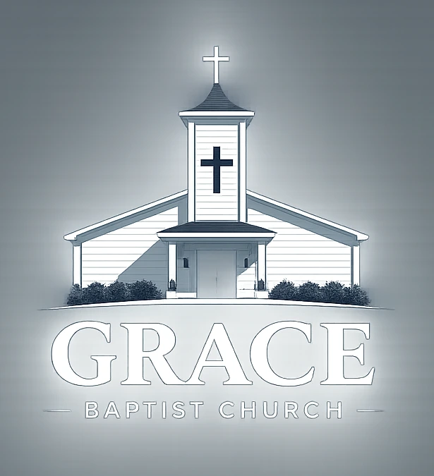

01Join us this week
Weekly Services
- Sunday Service
- 11:00 AM
- Wednesday Prayer Meeting
- 6:30 PM

Loving JESUS Loving People Making Disciples
Grace Baptist Church is a welcoming church family in Houma where people of every generation can worship, hear God’s Word, and grow together.
New here?
You do not need to have everything figured out before you walk through the doors. You are welcome here, and you can expect a genuine welcome.
Expect Scripture, prayer, worship, and people who are glad you came. Dress comfortably and bring the whole family.
Learn more about Grace9775 East Park Avenue
Houma, LA 70363
More than a Sunday service
Pastor Irby Fitch and the Grace Baptist Church family invite you to worship the Lord, learn from His Word, and build relationships that encourage real faith in everyday life.
Truth that matters. Bible-centered preaching for the life you are living right now.
People who care. A church family where every generation has a place.
Hope in Jesus. The good news of Christ is at the center of everything we do.

The gift of eternal life
We would like to share with you the free gift of eternal life offered through Jesus Christ. The Bible says, “That ye may know that ye have eternal life” (1 John 5:13). Do you know for sure, without a doubt, that you are going to Heaven when you die? Here is how you can know:
Sin is anything we do that is wrong. According to Romans 3:23, “All have sinned, and come short of the glory of God.” We come short of Heaven because we have sinned.
Whether a person has sinned little or a lot, sin carries a penalty. Revelation 20:14 describes the second death, and Romans 6:23 says, “For the wages of sin is death.”
The good news is that Jesus paid our sin debt through His death, burial, and resurrection. Romans 5:8 says, “But God commendeth his love toward us, in that, while we were yet sinners, Christ died for us.” Eternal life is offered as a free gift through Christ alone.
Romans 10:9 says, “That if thou shalt confess with thy mouth the Lord Jesus, and shalt believe in thine heart that God hath raised him from the dead, thou shalt be saved.” Salvation is received by placing your faith in Jesus Christ.
Have questions?
Send Grace Baptist Church a message or visit a service to speak with Pastor Irby Fitch about salvation and faith in Jesus.
Stay connected
For special services, revivals, fellowships, church announcements, and schedule updates, visit the Grace Baptist Church Facebook page.
Come see us
Have a question before Sunday? Send a Facebook message, view current updates, or get directions below.
Your seat is waiting